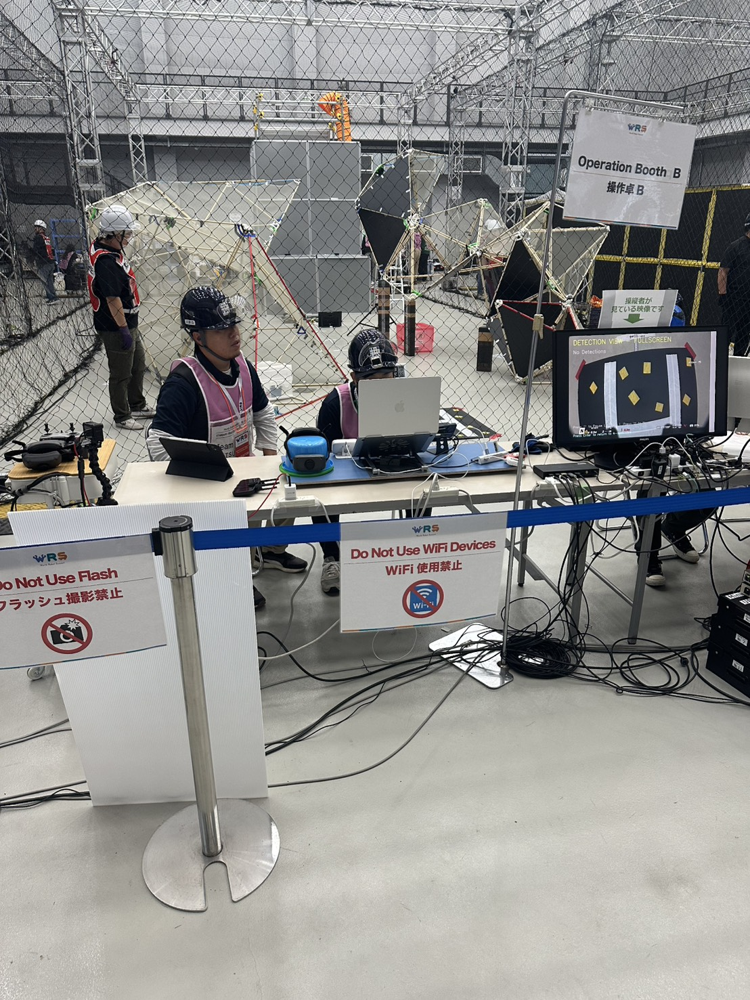
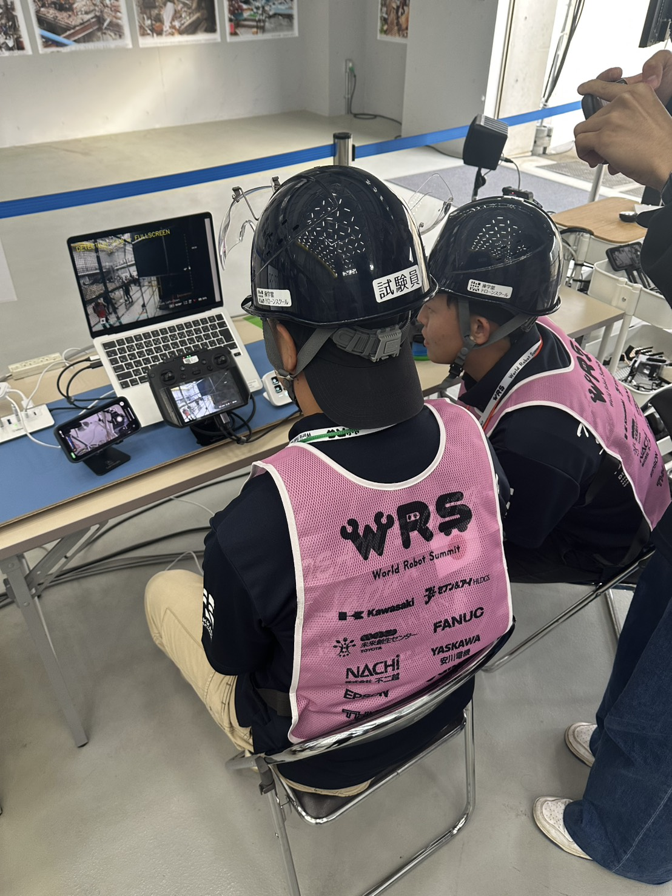
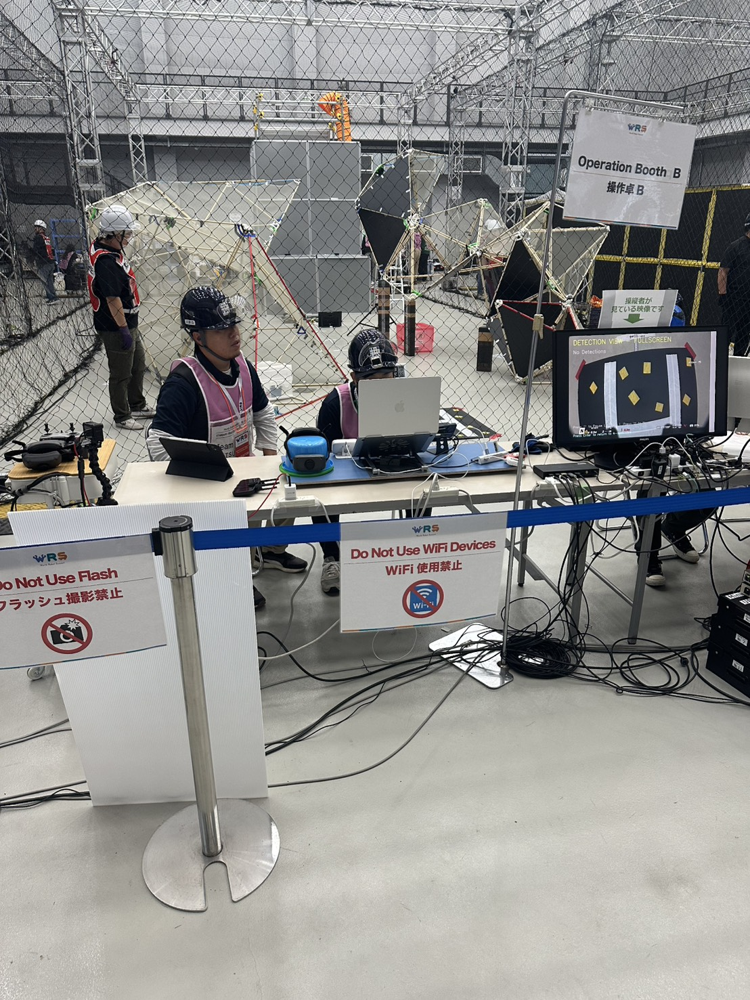
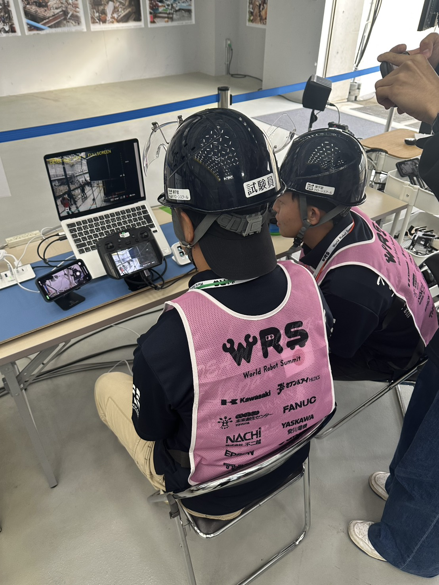

.jpg) 



Drone x WRS システムポートフォリオ
操学舘ドローンスクール×関西学院大学
World Robot Summit（WRS）とは
World Robot Summit（WRS）は、ロボットの社会実装や研究開発の加速を目的とした国際的なロボット複合イベントです。課題解決に向けた新たなイノベーションの創出を目指しており、イベントの中心となる競技会では、最先端のロボット技術やソリューションを競うために、世界中から参加チームが集結します。
私が参加したのは STMチャレンジ（過酷環境 F-REI チャレンジ） で、大規模な災害による困難環境下で活躍するロボット・ドローンの開発、プラント・トンネル災害の予防、災害時の対応のための技術開発を目的とする競技です。
今回は TEAM-SOGAKKAN として、操学舘ドローンスクールと関西学院大学の合同チームで出場しました。操学舘はドローンの操縦とハードウェアの作成、関西学院大学はソフトウェアの作成を主に担当しました。
産学連携パートナー
操学舘ドローンスクール
「人とテクノロジーが調和した社会」を目指すべき時期に来ています。操学舘は、テクノロジーに頼り過ぎず、人を排除しない世界を目指し、「リモートモビリティ」に関する最新技術と技能を提供する「学び直しの道場」として、職業能力向上を支援します。操学舘は、資格取得から実践訓練まで、すべてのサービスを提供し、他の産業分野でも高いスキルの習得を支援します。
今回のWRSプロジェクトではハードウェアの作成と操縦を担当
関西学院大学 山田ゼミ
山田孝子教授のご指導の下文理融合学部の強みを生かし、広い視野を持って研究を行っています。当ゼミでは、「最先端技術の融合とその社会的影響」を中心に多様な研究を行い、実社会で直面する課題を解決するためのプロジェクトを推進します。特に、ドローン技術を活用した研究は注目されており、技術革新が経営や業務プロセスに与える影響を探求しています。学生は個人だけでなく、チーム単位でも実践的な問題解決能力を磨いています。
今回のWRSではソフトウェアの開発を担当
このポートフォリオについて
本ポートフォリオサイトでは、WRS2025 TeamSogakknとしてWorld Robot Summit（WRS）STMチャレンジに向けて開発したソフトウェアシステムとハードウェア機体について、詳細な情報を紹介しています。
ソフトウェアについて
各ソフトウェアシステムのページでは、画面配置（左上・右上・右下・左下）の意図をテキストで説明し、画像は用意されたサンプルをギャラリーとして掲載しています。ギャラリー画像はクリックで拡大（ライトボックス表示）できます。
- システム1：ランドルト環認識
- システム2：数字＆ランドルト認識
- システム3：モーション検出
- システム4：危険物ラベル認識
- システム5：QRコード認識
ハードウェアについて
各ハードウェア機体のページでは、課題説明、機体概要、実装概要、仕様、操作手順、設計上の工夫などを詳しく説明しています。各機体の画像もギャラリー形式で掲載しています。
- ハードウェア1：防水機体（IPX2相当）
- ハードウェア2：サンプル回収機体（ビー玉回収）
- ハードウェア3：拭き取り機体
- ハードウェア4：デフォルト装備機体（照明＋プロペラガード）
各ページは上部ナビゲーションから移動できます。詳細はそれぞれのページをご覧ください。
各システムの概要
下記リンクから各システムの詳細ページへ移動し、ギャラリー画像をクリックして拡大表示できます。

システム1：ランドルト環認識システム
ランドルト環の切れ目方向をリアルタイムに推定し、複数対象にも頑健に対応する認識・可視化を行う課題。

システム2：数字 & ランドルト認識システム
数字とランドルト環を同一パイプラインで同時に検出・分類し、結果を視覚とテキストで即時提示する統合認識課題。

システム3：モーション検出
動体をリアルタイムに検出し、追跡・動きの可視化を行うことで安全監視や進捗観察を支援する課題。
システム4：危険物ラベル認識
容器や掲示物から危険物ラベル（GHS 等）を自動認識し、クラスや注意喚起情報を提示して安全確認を支援する課題。

システム5：QRコード認識
QRコードを高速に読み取り、リンクやテキスト等の内容を即時に提示・参照できるようにし、現場の情報取得を効率化する課題。
World Robot Summit（WRS）とは
World Robot Summit（WRS）は、ロボットの社会実装や研究開発の加速を目的とした国際的なロボット複合イベントです。課題解決に向けた新たなイノベーションの創出を目指しており、イベントの中心となる競技会では、最先端のロボット技術やソリューションを競うために、世界中から参加チームが集結します。
私が参加したのは STMチャレンジ（過酷環境 F-REI チャレンジ） で、大規模な災害による困難環境下で活躍するロボット・ドローンの開発、プラント・トンネル災害の予防、災害時の対応のための技術開発を目的とする競技です。
今回は TEAM-SOGAKKAN として、操学舘ドローンスクールと関西学院大学の合同チームで出場しました。操学舘はドローンの操縦とハードウェアの作成、関西学院大学はソフトウェアの作成を主に担当しました。
産学連携パートナー
操学舘ドローンスクール
「人とテクノロジーが調和した社会」を目指すべき時期に来ています。操学舘は、テクノロジーに頼り過ぎず、人を排除しない世界を目指し、「リモートモビリティ」に関する最新技術と技能を提供する「学び直しの道場」として、職業能力向上を支援します。操学舘は、資格取得から実践訓練まで、すべてのサービスを提供し、他の産業分野でも高いスキルの習得を支援します。
今回のWRSプロジェクトではハードウェアの作成と操縦を担当
関西学院大学 山田ゼミ
山田孝子教授のご指導の下文理融合学部の強みを生かし、広い視野を持って研究を行っています。当ゼミでは、「最先端技術の融合とその社会的影響」を中心に多様な研究を行い、実社会で直面する課題を解決するためのプロジェクトを推進します。特に、ドローン技術を活用した研究は注目されており、技術革新が経営や業務プロセスに与える影響を探求しています。学生は個人だけでなく、チーム単位でも実践的な問題解決能力を磨いています。
今回のWRSではソフトウェアの開発を担当
このポートフォリオについて
本ポートフォリオサイトでは、WRS2025 TeamSogakknとしてWorld Robot Summit（WRS）STMチャレンジに向けて開発したソフトウェアシステムとハードウェア機体について、詳細な情報を紹介しています。
ソフトウェアについて
各ソフトウェアシステムのページでは、画面配置（左上・右上・右下・左下）の意図をテキストで説明し、画像は用意されたサンプルをギャラリーとして掲載しています。ギャラリー画像はクリックで拡大（ライトボックス表示）できます。
- システム1：ランドルト環認識
- システム2：数字＆ランドルト認識
- システム3：モーション検出
- システム4：危険物ラベル認識
- システム5：QRコード認識
ハードウェアについて
各ハードウェア機体のページでは、課題説明、機体概要、実装概要、仕様、操作手順、設計上の工夫などを詳しく説明しています。各機体の画像もギャラリー形式で掲載しています。
- ハードウェア1：防水機体（IPX2相当）
- ハードウェア2：サンプル回収機体（ビー玉回収）
- ハードウェア3：拭き取り機体
- ハードウェア4：デフォルト装備機体（照明＋プロペラガード）
各ページは上部ナビゲーションから移動できます。詳細はそれぞれのページをご覧ください。
WRS2025 TeamSogakkn ハードウェア説明
WRS2025に向けて開発した4種類の機体について、詳細な仕様と設計思想を紹介します。なお、掲載する各機体はWRS2025 TeamSogakknが設計・制作したものです。

ハードウェア4：デフォルト装備機体（照明＋プロペラガード）
DJI Avata 2をベースに照明およびプロペラガードとバッテリーユニットを一体化したモジュールを標準装備した基本モデル。

ハードウェア1：防水機体（IPX2相当）
デフォルト装備機体をベースに防水処理を施行しIPX2相当の防水性能を備えたモデル。災害現場での点検や探索飛行対応を想定。

ハードウェア2：サンプル回収機体（ビー玉回収）
デフォルト装備機体をベースに機体下部へサンプル回収モジュールを搭載。二輪走行機構により空中飛行と地上走行を切り替え可能。

ハードウェア3：拭き取り機体
デフォルト装備機体をベースに機体上部へ拭き取りモジュールを搭載。アーム先端に布材を装着し対象面へ押し当てて拭き取り動作を行う。